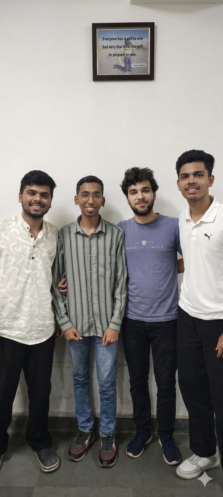

A chemistry project exploring the synthesis of writing ink using tannic acid, ferrous sulphate, and natural compounds.

A
Anshum Mankar
PRN: 202401040078
T
Tejas Mali
PRN: 202401040083
V
Vikrant Bendre
PRN: 202401040090
S
Shreyansh Kaul
PRN: 202401040068
Scroll down or pick a tab to explore the project
Tab 2 · Materials
Chemical Materials
The following chemicals and reagents are required for the preparation of writing ink.
🌿
Tannic Acid
C₇₆H₅₂O₄₆
Primary tanning agent
250 gm
🍃
Gallic Acid
C₇H₆O₅
Colour developer
80 gm
💧
Distilled Water
H₂O
Solvent medium
5 L + 4 L
🔩
Ferrous Sulphate
FeSO₄
Iron salt · ink base
300 gm
🧪
Carbolic Acid
C₆H₅OH
Preservative
20 gm
⚗️
Dilute HCl
HCl (aq)
Acidic stabilizer
250 mL
🟦
Copper Sulphate
CuSO₄
Colour modifier
As needed
🫙
Glue
—
Adhesion & viscosity
Little (soln.)
🔽
Filtration
—
Separation step
Filter paper
Equipment Needed
🧫Beakers (3×)
🌡️Glass stirrer
⚖️Weighing balance
🔽Funnel & filter paper
🍾Storage bottles
🥄Measuring cylinders
Tab 3 · Procedure
Step-by-Step Procedure
Follow these carefully ordered steps to prepare writing ink in the laboratory.
1
Prepare Solution A — Tannic & Gallic Acid
Dissolve 250 gm of tannic acid and 80 gm of gallic acid in approximately 5 litres of distilled water. Stir thoroughly until completely dissolved.
🧪 Solution A
2
Add Dilute HCl to Solution A
To Solution A, carefully add 250 mL of dilute HCl. This acidic environment stabilises the tannin complex and aids in final colour development.
⚗️ Acidification
3
Prepare Solution B — FeSO₄ & Carbolic Acid
In a separate container, dissolve 300 gm of ferrous sulphate (FeSO₄) and 20 gm of carbolic acid in about 4 litres of distilled water. Mix well until the iron salt is fully dissolved.
🔩 Solution B
4
Prepare Colour Solution (Solution C)
In a third container, dissolve the desired colour pigment / CuSO₄ in a small amount of water until fully dispersed into a concentrated colour solution.
🎨 Colour Solution C
5
Mix All Three Solutions Together
Combine Solutions A, B, and C into one large vessel. Also add a little glue solution, a small amount of alcohol, and scented material as desired. Mix the entire blend thoroughly.
🔀 Final Mix
6
First Filtration
Pass the mixed solution through a funnel lined with filter paper. Collect the filtrate and set it aside to rest for a few days, allowing the ink to mature and darken.
🔽 Filtration I
7
Second Filtration & Bottling
After resting, filter the liquid once again to remove any residual precipitate. Store the clear filtered ink in clean storage bottles. The ink is now ready for use.
Eco-friendly compared to synthetic inks (natural tannin base).
❌ Disadvantages
Iron-gall ink is corrosive and can damage paper fibres over time.
Requires careful multi-step preparation with precise measurements.
Carbolic acid (phenol) is toxic and must be handled carefully.
Dilute HCl is corrosive; requires protective equipment.
Ink quality can vary if mixing ratios are not followed precisely.
Long preparation time — resting & double filtration needed.
Not suitable for modern inkjet or laser printing systems.
💡 Did You Know?
Iron-gall ink (also known as iron gall ink or nut-gall ink) is one of the oldest known inks, dating back to the 5th century AD. It was the dominant writing ink in Western civilisation for over a thousand years, used by artists like Leonardo da Vinci and composers like Bach for their manuscripts.
Tab 6 · Interactive Quiz
Test Your Knowledge
Answer the multiple-choice questions below. Immediate feedback will tell you if you're correct!